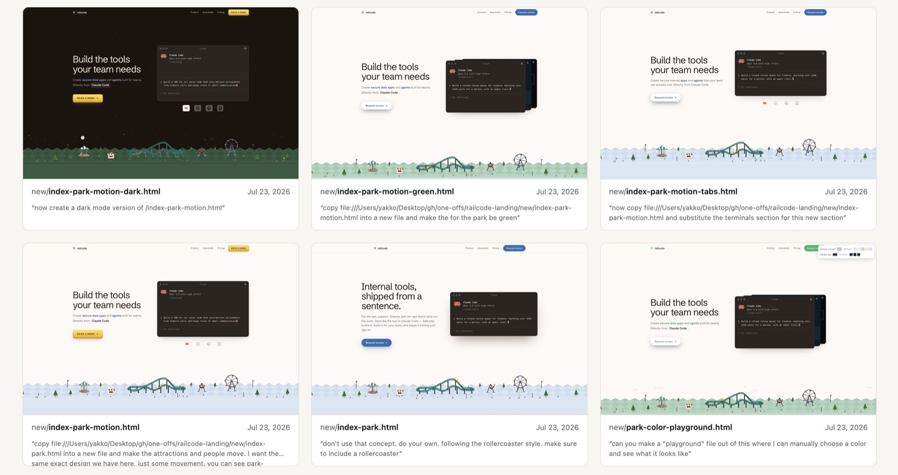

HELLO, HUMAN! CASE STUDY 02
AI로 만든 웹사이트,
디자인은 사라지지 않았다
Railcode 사례로 살펴보는 시안 탐색, 임시 도구,
그리고 사람이 맡아야 할 판단

AI에게 화면을 만들어 달라고 한 뒤, 이런 생각이 든 적이 있으신가요? “동작은 하는데, 우리 서비스 같지는 않다.”
색상을 바꾸고, 버튼을 손보고, 설명을 추가해도 무언가 어색합니다. 그렇다고 어디를 어떻게 고쳐야 하는지 말로 설명하기도 쉽지 않습니다.
이번에는 완성된 웹사이트만큼이나 그 앞에 놓인 시행착오를 살펴보려고 합니다. 주인공은 Railcode의 웹사이트 제작 과정입니다. 롤러코스터가 움직이는 첫 화면도 흥미롭지만, 더 눈여겨볼 부분은 그 화면을 고르기까지의 작업 방식입니다.
이 사례를 읽는 관점은 간단합니다. 사람이 더 나은 디자인을 찾도록 AI를 어떻게 사용했는가입니다.
서로 다른 시안에서 방향을 찾고, 맞지 않는 안은 버리기.
복제본과 임시 조작 도구로 차이를 직접 확인하기.
화면의 인상과 실제 사용 결과를 나누어 평가하기.
롤러코스터 하나에서 시작된 웹사이트
Railcode 창업자의 제작기에 따르면, 출발점은 이름에 담긴 ‘레일’과 무언가를 만드는 ‘즐거움’을 연결하는 것이었습니다. 여기서 롤러코스터라는 소재가 나왔습니다.
처음부터 놀이공원이라는 방향이 선명했던 것은 아닙니다. 문자로 형태를 표현하는 ASCII 스타일과 네온 스타일 등을 탐색했고, 그 과정에서 놀이공원 경영 게임인 RollerCoaster Tycoon을 떠올렸다고 합니다. 작은 게임도 시험했지만, 사이트에 넣기에는 과하다고 판단했습니다.
마음에 드는 롤러코스터를 얻은 뒤에도 문제가 남았습니다. 일반적인 웹사이트 템플릿 위에 올려놓으니 그림만 따로 떨어져 보였습니다. 이후 주변 놀이기구를 더하고, 놀이공원 장면이 다음 영역의 배경색으로 이어지도록 다듬었습니다.
- 01소재 선택레일과 즐거움을 롤러코스터로 연결
- 02방향 탐색여러 표현과 작은 게임까지 시험
- 03맥락 조정주변 풍경과 다음 영역을 연결
- 04세부 비교색상·버튼·배치를 반복해서 조정
여기서 읽어낼 수 있는 첫 번째 교훈은 좋은 소재 하나와 좋은 화면 전체는 다른 문제라는 점입니다. 멋진 일러스트를 만들었다면, 왜 그 그림이 여기에 있는지, 제품 설명과 어떤 관계인지, 다음 영역으로 어떻게 이어지는지도 설명할 수 있어야 합니다.
커머스 화면으로 바꾸어 생각해 보겠습니다. 상품 카드 하나가 예뻐도 가격, 쿠폰, 배송 정보의 관계가 불분명하면 사용자는 구매 조건을 이해하기 어렵습니다. 화면의 일부를 잘 만드는 일과 전체가 같은 목적을 향하게 만드는 일은 구분해서 보아야 합니다.
확인 자료 · Railcode 제작기, A whole lotta rollercoasters · Going off the rails ↗
AI가 낮춘 구현 장벽, 여전히 남아 있는 디자인
무엇을 전달할지 정하고, 여러 가능성을 살펴보고, 어울리지 않는 방향을 버리고, 남은 안을 다듬는 행위는 디자인 작업에 가깝습니다. 제작자도 디자이너가 불필요해졌다고 주장하지 않습니다. 오히려 코딩 에이전트 덕분에 자신이 생각한 모습을 구현할 수 있게 되었고, 디자인에 더 관심이 생겼다고 설명합니다.
영국 Design Council의 더블 다이아몬드 역시 문제와 해결책을 탐색하고 좁혀가는 과정을 설명합니다. 여기에는 사용자 이해와 문제 정의, 대안 개발과 시험이 포함됩니다. 다만 시각적 대안을 반복해서 만들었다는 이유만으로 사용자 조사까지 완료했다고 볼 수는 없습니다.
따라서 이 사례는 직접 구현하기 어려웠던 사람이 디자인 과정에 더 깊이 참여한 사례로 읽는 편이 타당합니다. 예상하지 못한 시안을 제안하는 AI의 역할도 탐색에 도움이 됩니다. 그 제안이 우리 목적에 맞는지 평가하는 기준은 별도로 필요합니다.
실무에서 “사람의 감각이 중요하다”는 말도 조금 더 구체적으로 바꿀 수 있습니다.
| 처음 드는 인상 | 팀에서 확인할 질문 |
|---|---|
| 이쪽이 더 예쁘다. | 중요한 정보가 먼저 보이고, 같은 의미에 같은 표현을 쓰는가? |
| 버튼이 어색하다. | 누르면 어떤 일이 일어나는지 문구와 위치가 설명하는가? |
| 장식이 너무 많다. | 이 장식이 메시지 이해나 다음 행동을 돕는가? |
감각을 개인의 취향에만 남겨두지 않고, 팀이 공유할 수 있는 판단 기준으로 바꾸는 것입니다. 그래야 다음 수정에서 무엇을 유지하고 무엇을 바꿀지도 설명할 수 있습니다.
시안을 더 만드는 것보다 비교를 쉽게 만드는 것
제작자는 디자인이 거의 정리될 때까지 단일 HTML 파일을 사용하고, 복제본을 나란히 비교한 뒤 React 컴포넌트로 전환한다고 설명합니다. 강조색, 글자색, 잔디색, 배경색 등을 실시간으로 바꾸는 ‘플레이그라운드’도 만들었습니다.

이 대목은 웹사이트의 외형보다 실무에 가져오기 좋은 부분입니다. AI에게 결과물뿐 아니라, 결과물을 판단하는 데 필요한 도구도 만들게 했기 때문입니다.
예를 들어 “글자를 조금 키워 주세요”라고 요청하고 기다린 뒤, 다시 “행 간격을 줄여 주세요”라고 요청하는 흐름을 생각해 보겠습니다. 이전 상태가 더 나았는지 확인하려면 또 설명해야 합니다.
글자 크기, 행 높이, 열 너비를 직접 바꾸는 작은 조작 패널이 있다면 흐름이 달라집니다. 같은 데이터를 보면서 값을 조절하고, 적절한 조합을 찾은 뒤 적용을 요청할 수 있습니다. 이때 줄어드는 것은 판단할 때마다 반복하던 설명과 수정 요청입니다.
한 번 바꾸고 끝나는 값
직접 수정하는 편이 나을 수 있습니다. 임시 도구를 만들고 확인하는 데에도 시간이 듭니다.
여러 조합을 계속 비교하는 값
작은 조작 도구를 검토해 볼 만합니다. 원래 값으로 돌아가기와 선택한 값 기록을 함께 마련합니다.
단일 HTML이 모든 프로젝트의 정답은 아닙니다. 기존 Vue나 React 제품에 컴포넌트와 스타일 기준이 충분히 마련되어 있다면, 그 안에서 격리된 실험 화면을 만드는 편이 더 정확할 수 있습니다.
핵심은 기존 안을 잃지 않고, 같은 조건에서 대안을 비교할 수 있는가입니다. 파일 형식은 그 목적에 맞게 선택하면 됩니다.
확인 자료 · Railcode 제작기, Forks on forks ↗
‘디자이너가 만든 것 같다’는 평가에서 한 걸음 더
이 사례를 긍정적으로 보더라도 세 가지 질문은 남습니다. 화면이 인상적이라는 감상과 실무에서 사용할 수 있다는 판단 사이에는 확인할 것이 있습니다.
인상적인 화면과 일관된 화면은 같은가
눈길을 끄는 첫 화면이 있다고 해서 버튼, 탭, 안내 영역까지 모두 같은 시각적 규칙을 따르는 것은 아닙니다. 익숙한 카드나 그라데이션이 있다는 이유만으로 AI가 무성의하게 만들었다고 단정할 수도 없습니다.
평가 질문은 “AI가 만든 티가 나는가?”에서 더 구체적으로 나아가야 합니다. 같은 의미에 같은 표현을 사용했는지, 중요한 정보가 먼저 보이는지, 장식이 이해와 행동을 돕는지 살펴보는 편이 수정 방향을 찾는 데 도움이 됩니다. 첫 화면의 분위기가 마음에 든다면 다른 영역에도 그 선택의 이유가 이어지는지 확인해 봅니다.
반복해서 만들었다면 생산성이 높아진 것인가
공개 제작기에는 총작업시간, 모델 사용 비용, 기존 방식 대비 절감률, 전환율 개선을 입증하는 비교 결과가 제시되어 있지 않습니다. 따라서 이 사례만으로 “몇 배 빨라졌다”거나 “디자인 비용이 사라졌다”고 말하기는 어렵습니다.
제작 속도와 결과물의 품질은 별도로 보아야 합니다. 같은 시간에 더 많은 대안을 검토한 것일 수도 있고, 더 높은 완성도를 위해 시간을 더 사용한 것일 수도 있습니다. 어느 쪽이었는지는 기록이 있어야 판단할 수 있습니다.
업무에 도입한다면 생성 시간에 더해 요청을 작성한 시간, 비교하고 선택한 시간, 수정과 검증에 든 시간까지 함께 기록하는 편이 좋겠습니다. 원문에 등장하는 모델 선호도 역시 제작자의 경험이며, 동일 조건의 성능 비교 결과로 확대해서는 안 됩니다.
완성된 화면을 재현하는 것과 처음 방향을 찾는 것은 같은가
완성된 화면을 참고해 비슷한 결과물을 만드는 작업은 이미 배치, 색상, 분위기라는 단서를 가지고 출발합니다. 아무 방향도 없는 상태에서 적절한 표현을 찾는 작업은 그 단서부터 선택해야 합니다.
따라서 AI 도구나 작업 방식을 비교할 때는 참고 자료, 기능 범위, 사람이 투입한 준비 작업을 함께 공개해야 공정합니다. 결과가 나오는 시간만 비교하면 그 전에 들어간 판단과 준비가 빠질 수 있습니다.
확인 자료 · 제작자의 작업 방식과 경험이 담긴 원문 ↗
화면의 완성도와 서비스의 완성도 사이
시각적 방향을 찾는 동안에도 사용자가 설명을 이해할 수 있는지, 키보드로 주요 기능을 사용할 수 있는지, 움직임이 읽는 데 방해되지 않는지 확인해야 합니다. W3C는 개발 초기부터 접근성을 평가하고, 자동 도구와 사람의 평가를 함께 사용할 것을 안내합니다. 도구 하나만으로 접근성 충족 여부를 판정할 수는 없습니다.
애니메이션에도 구체적인 확인 기준이 있습니다. WCAG 2.2의 ‘일시정지, 정지, 숨김’ 기준은 자동으로 시작하고, 5초 넘게 지속되며, 다른 콘텐츠와 함께 표시되는 움직이거나 깜박이거나 스크롤되는 정보에 대해 원칙적으로 제어 수단을 요구합니다. 기능상 필수적인 움직임은 예외입니다. 이는 Railcode의 위반 여부를 판정한 것이 아니라, 유사한 화면을 검토할 때 적용할 기준입니다.
확인 자료 · W3C 접근성 평가 안내 ↗ · WCAG 2.2, Pause, Stop, Hide ↗
페이지의 목적에 맞는 구현인가
소개 페이지나 안내 콘텐츠라면 정적 생성이나 서버 렌더링을 검토하고, 필요한 상호작용에 자바스크립트를 사용하는 선택지도 있습니다. Google의 웹 렌더링 가이드는 렌더링 방식마다 초기 표시, 클라이언트 실행량, 서버 비용에 다른 절충점이 있음을 설명합니다.
React 사용 여부만으로 성능을 결론낼 수는 없습니다. 페이지의 목적에 맞는 전달 방식과 실행 비용을 선택했는가를 보아야 합니다. 이 글에서는 Railcode의 자바스크립트 전송량이나 로딩 성능을 측정하지 않았으므로, 특정 구현이 느리다는 결론을 내리지 않습니다.
프로토타입과 운영 코드의 경계도 필요합니다. GOV.UK의 프로토타이핑 지침은 여러 안을 만들고 시험하는 것을 권장하면서도, 프로토타입 코드를 그대로 운영 서비스에 복사하지 말라고 명시합니다. 빠르게 아이디어를 확인하는 코드와 실제 사용자를 책임지는 코드는 요구 수준이 다릅니다.
커머스에 적용한다면, 화면 하나의 판단부터
이 사례를 커머스 실무로 옮긴다면 시안을 만들고 비교하는 방식을 가져올 수 있습니다. 아래는 실제 적용 성과가 아니라, 헬로우 휴먼에서 해볼 수 있는 실험 제안입니다.
대상은 커머스 운영자의 배송지연 주문 조회 화면으로 가정하겠습니다. 목적은 다음과 같이 정의합니다.
운영자가 우선 처리해야 할 주문을 찾고, 지연 사유를 확인한 뒤, 다음 조치를 판단하기 쉽게 만든다.
같은 가상 주문 데이터와 기능을 사용하되 정보 배치를 다르게 만든 세 가지 안을 비교합니다.
| 시안 | 바꾸는 부분 | 확인할 질문 |
|---|---|---|
| 기존 구조를 정리한 안 | 열 순서, 간격, 강조 방식 | 익숙한 구조를 유지해도 개선되는가? |
| 우선순위를 앞세운 안 | 지연 정도와 처리 필요 상태의 배치 | 급한 주문을 더 쉽게 찾는가? |
| 목록과 상세를 함께 보는 안 | 선택한 주문의 사유와 이력을 옆에 표시 | 정보를 확인하러 이동하는 부담이 줄어드는가? |
세 안의 기능과 데이터가 다르면 무엇 때문에 결과가 달라졌는지 해석하기 어렵습니다. 검색·정렬 기능, 보여주는 주문과 정보, 수행할 과제는 같게 유지하고 비교하고 싶은 요소를 좁힙니다.
반복해서 조절할 필요가 있다면 행 높이, 글자 크기, 열 너비를 바꾸는 임시 패널을 붙입니다. 상태의 의미와 색상 규칙은 기존 제품의 기준 안에서 유지합니다. 조절 도구는 시안을 고르는 데 사용하고, 사용자 과제를 관찰할 때는 설정을 고정해 비교 조건이 흔들리지 않게 합니다.
이 실험의 산출물은 어떤 배치가 업무 판단을 돕는지 확인할 수 있는 비교 환경입니다. 보기 좋은 화면 세 개를 얻는 데서 한 단계 더 나아갑니다.
남겨야 할 것은 완성 화면보다 선택의 이유
비교가 끝났다면 가장 마음에 드는 화면과 함께 선택한 이유, 버린 이유를 기록해 보는 것이 좋겠습니다. 실제 사용자에게 같은 과제를 수행하게 하고, 완료 여부와 소요시간, 잘못된 판단, 도움이 필요했던 지점을 살펴볼 수 있습니다.
GOV.UK의 사용성 벤치마킹 지침도 과제 완료 여부, 수행 시간, 중도 포기뿐 아니라 실제로 완료하지 않았는데 완료했다고 생각하는 경우까지 확인하도록 안내합니다.
예를 들어 사용자가 주문을 빨리 찾았더라도 지연 사유를 잘못 이해했다면 성공으로 보기 어렵습니다. 반대로 시간이 조금 더 걸렸지만 중요한 예외를 놓치지 않았다면, 업무 성격에 따라 더 나은 안일 수 있습니다. 무엇을 성공으로 볼지는 실험 전에 정해야 합니다.
소규모 실험이라면 결과를 확정적인 생산성 수치로 확대하지 않고, 다음 수정 방향을 찾는 근거로 사용하는 편이 적절합니다. 같은 사람이 여러 안을 연속해서 사용했다면 화면에 익숙해진 영향도 기록하고, 가능하면 시안을 경험하는 순서를 바꿔 봅니다.
- 01해결할 문제사용자 과제와 성공 기준
- 02비교한 조건바꾼 배치와 유지한 데이터·기능
- 03관찰한 결과완료·오판·시간·도움이 필요한 지점
- 04선택한 이유채택·보류 이유와 남은 문제
모임에 남길 기록은 다음 사람이 이해할 수 있을 정도면 충분합니다. 이 기록이 쌓이면 다음 실험자는 같은 시행착오를 처음부터 반복하지 않아도 됩니다.
디자인은 사라지지 않고, 판단의 위치가 달라진다
Railcode의 제작 과정에서는 사람이 방향을 고르고, AI와 함께 대안을 만들고, 다시 비교하며 다음 방향을 정했습니다. 단일 HTML의 복제본과 작은 조작 도구는 그 판단을 더 쉽게 만드는 수단이었습니다.
Workless Engineering의 관점에서 줄이고 싶은 것은 반복적인 수정 요청과 불필요한 재작업입니다. 무엇을 전달할지, 어떤 조건을 지킬지, 실제로 더 나아졌는지 판단하는 과정은 여전히 필요합니다.
우리는 AI에게 더 많이 만들게 하고 있는가, 아니면 더 잘 고를 수 있는 작업 방식을 만들고 있는가.
다음 화면을 만들 때는 완성본을 요청하기 전에, 무엇을 비교하고 무엇으로 판단할지부터 정해봅시다.
직접 살펴볼 자료
- Railcode 웹사이트 ↗
- Yakko Majuri, How our vibe coded website looks like a designer made it ↗
- Design Council, 디자인 탐색과 수렴의 과정 ↗
- W3C, 웹 접근성 평가 안내 ↗
- WCAG 2.2, 움직이는 콘텐츠의 일시정지·정지·숨김 ↗
- Google web.dev, 웹에서 렌더링 (한국어) ↗
- GOV.UK, 프로토타입 만들기 ↗
- GOV.UK, 사용성 벤치마킹 ↗
첫 화면은 직접 캡처했고, 시안 비교 이미지는 제작기의 원본을 사용했습니다. 각각 원작·출처·확인 날짜를 표기했습니다. 제작기에서 웹사이트 전체의 공개 소스 저장소는 확인하지 못했으므로 코드 검증 사례로 다루지 않았습니다.
AI 사례연구 목록으로 돌아가기